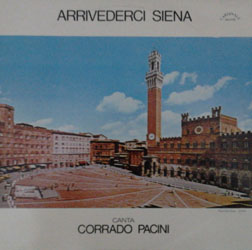

Corrado Pacini (detto Noccolino) nacque a Siena (Taverne d'Arbia) il 3 giugno 1922.
Iniziò a farsi conoscere interpretando delle serenate "su commissione" quindi
dopo aver studiato seriamente canto, iniziò la sua carriera alla radio nazionale (allora EIAR) durante gli anni della seconda guerra mondiale.
E' comunque nel dopoguerra che otterrà un grande successo:
nel 1947 lanciò la famosa "Siena mia", una rumba del maestro Carlo Sottili, a cui fecero seguito, qualche anno dopo, le celebri "Senesina" (sempre di Sottili) e "Madonna Siena" del maestro Cesarini. Questi tre brani diventeranno i suoi cavalli di battaglia che si porterà dietro per tutta la carriera.
negli anni Cinquanta si divise tra radio e spettacoli di rivista, aumentando notevolmente la sua popolarità. Nel 1953 girò l'Italia con la compagnia di Mario Marotti e lo spettacolo "I 7 piaceri della radio". Un altro successo di questo periodo fu "Serenata a Siena", capolavoro del maestro Brandani.
Quando sul finire degli anni '50 il suo stile melodico venne messo in crisi dall'avvento degli urlatori e del rock'n'roll, spostò la sua carriera in Francia, dove ottenne un personale successo con "Marjolaine".

Dal 1961 al 1967 si esibì ai microfoni di Radio MonteCeneri con l'orchestra Radiosa diretta dal maestro Fernando Paggi. Interpretò canzoni celebri come "Jessica" (di Bruno Martino), "Nessuno al mondo", "Cercami".
Negli anni Settanta e Ottanta incise diversi LP dedicati alla sua città, quali "Souvenir di Siena", "Arrivederci Siena" e "Serenata a Siena", dove accanto ai suoi vecchi successi, interpretò canzoni nuove, alcune da lui stesso scritte, come "La tratta", "Arrivederci Siena", "Siena di notte", "Non siamo più bambini" e la celebre "Il palio che passione", divenuta poi una delle canzoni più cantate dai senesi, conosciuta col titolo "Son le sette", come recita l'inizio dell'inciso.
E' inoltre nota a tutti i senesi la sua rivalità, vera o presunta, con il cantante Athos Ciofi.
Si spense a Siena il 15 dicembre 2002

 ACCADDE OGGI
ACCADDE OGGI